יוצרים
תכשיטים
עם כוונה ומשמעות
חוויה מיוחדת ומקרבת
המשלבת אבני חן טבעיות,
בחירה אישית,
הקשבה וערך רגשי עמוק שפותח את הלב.
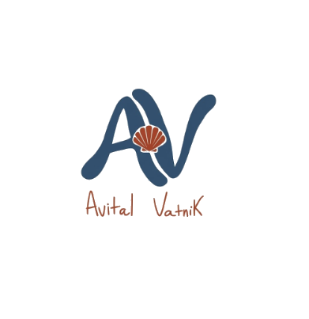
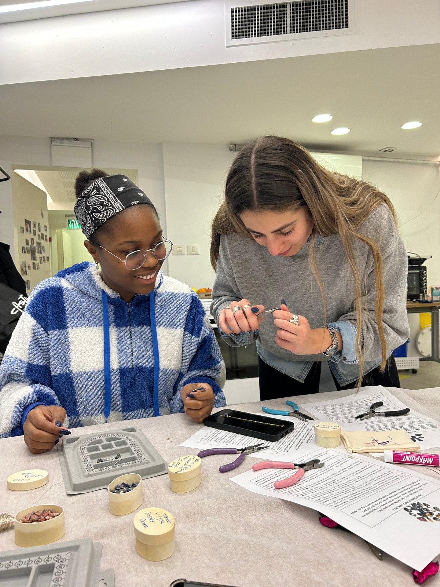
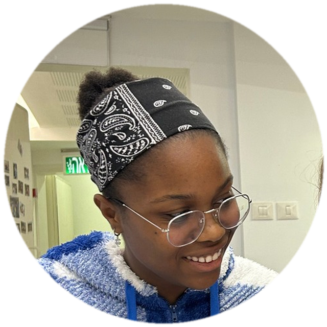
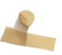
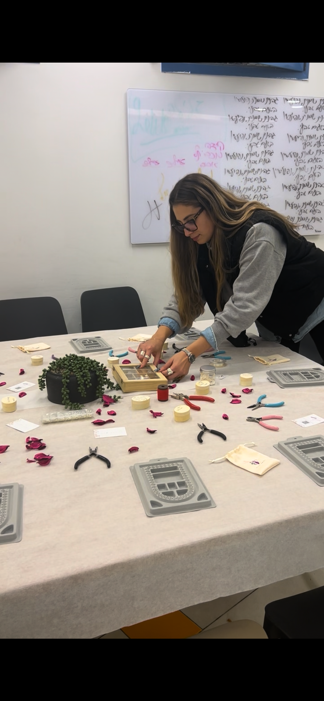
הרבה מעבר לסתם
תכשיט
ברוב סדנאות היצירה, המשתתפים מכינים פריט יפה
ויוצאים איתו הביתה.
בסדנאות שלי, היצירה היא רק השער לחוויה רגשית
עמוקה יותר.
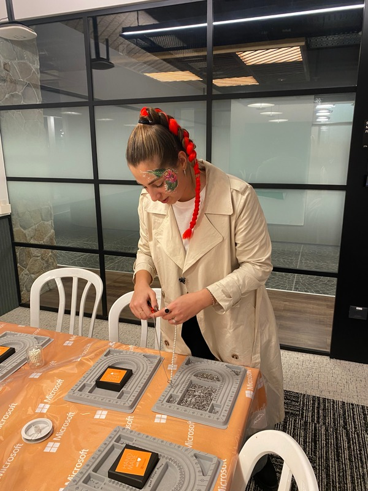
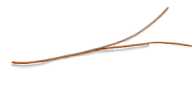
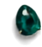
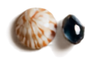
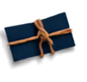
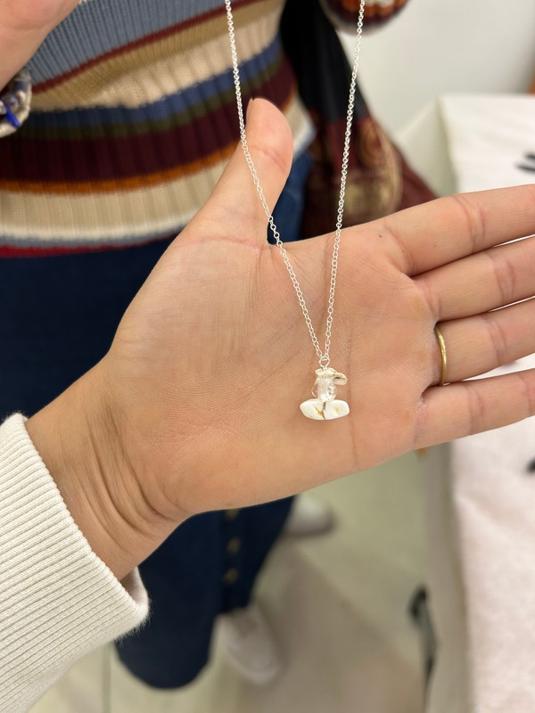
- בחירה מודעת: כל משתתף בוחר אבן חן עם תכונה שהוא רוצה לחזק בחייו (ביטחון, רוגע, שמחה, אהבה).
- שיח וחיבור אישי: הסדנה יוצרת מרחב מעצים ומקשיב, בו המשתתפים משתפים את הבחירות שלהם.
- מזכרת לחיים: התכשיט שנוצר הוא לא סתם יצירה במגירה – הוא קמע אישי המזכיר את הכוונה שנבחרה.
מסלול החוויה
ארבעת שלבי הסדנה:
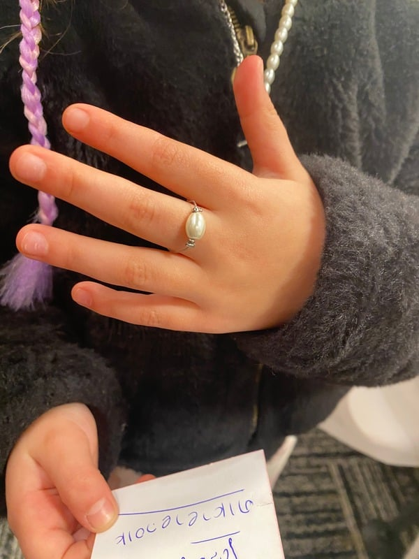
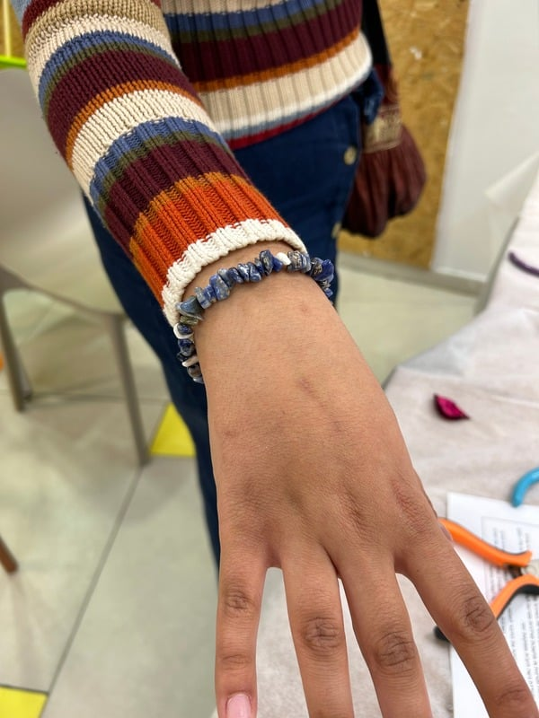
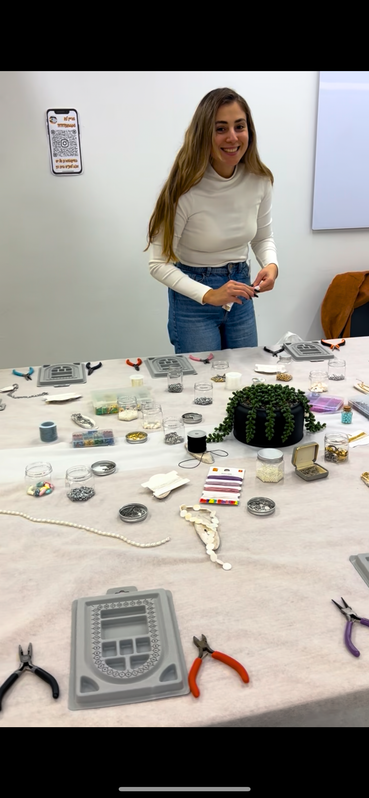
-
1
היכרות והסבר:
הקדמה מרתקת על עולם אבני החן, התכונות, האנרגיות והמשמעויות המיוחדות של כל אבן.
-
2
בחירת אבן אישית:
כל משתתף בוחר את האבן שמדברת אליו ומכניס כוונה אישית לחייו (אומץ, שלווה, ביטחון).
-
3
עיצוב ויצירה:
עבודה מעשית עם מגוון חומרים עשיר לעיצוב התכשיט. קבלת ידע ליצור אחר כך גם לבד.
-
4
אריזה ומזכרת:
אריזה ממותגת ויפה, מתנה מרגשת שנשארת ומוסיפה משמעות.
יצירת קשר
לתאום סדנה והשארת פרטים
אשמח להגיע אליכם וליצור יחד חוויה מיוחדת.